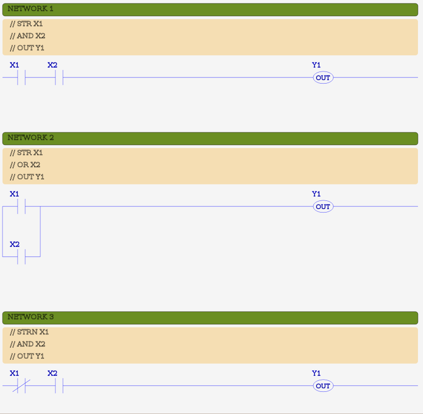
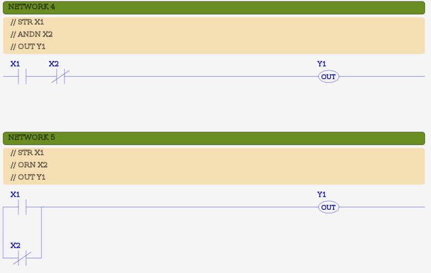
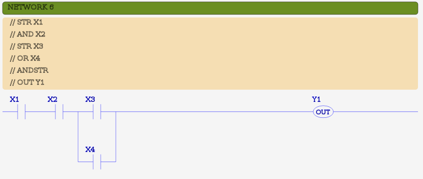
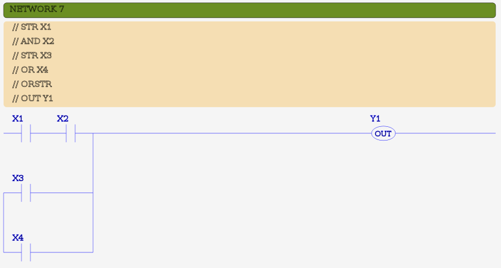

MBLogic
for an open world in automation
MBLogic
for an open world in automation
Boolean Input Instructions
Boolean input instructions read a Boolean value from the data table or the logic stack, and output the result to the logic stack.
| Instruction | Description | # Params | X | Y | C | T | CT | SC | Symbol |
|---|---|---|---|---|---|---|---|---|---|
| AND | AND bit with top of logic stack | 1 | X | X | X | X | X | X |  |
| ANDN | AND NOT bit with top of logic stack | 1 | X | X | X | X | X | X |  |
| ANDSTR | AND top two values on logic stack | 0 | |||||||
| OR | OR bit with top of logic stack | 1 | X | X | X | X | X | X | |
| ORN | OR NOT bit with top of logic stack | 1 | X | X | X | X | X | X | |
| ORSTR | OR top two values on logic stack | 0 | |||||||
| STR | Store bit onto logic stack | 1 | X | X | X | X | X | X | |
| STRN | Store NOT bit onto logic stack | 1 | X | X | X | X | X | X | |
Boolean input instructions have two types of input parameters, explicit and implicit. A Boolean input instruction will accept no more than one explicit parameter, and zero, one, or two implicit parameters.
- An explicit parameter is a Boolean (bit) address such as X, Y, C, etc.
- An implicit parameter is the value on the top of the logic stack.
- Some instructions use the top two logic stack values as implicit parameters.
All Boolean input instructions output their result by modifying the logic stack.
Boolean input instructions fall into three categories: AND, OR, and STORE.
- AND instructions perform a logical AND on two inputs and store the result by replacing the original value on the top of the logic stack with the new value.
- OR instructions perform a logical OR on two inputs and store the result by replacing the original value on the top of the logic stack with the new value.
- STORE instructions simply store a value on the top of the logic stack, pushing the original value further down on the stack without modifying it.
All Boolean input instructions have both normal and "NOT" versions.
Example:
NETWORK 1 STR X1 AND X2 OR X3 OUT Y1 NETWORK 2 STRN C10 ANDN C11 ORN C12 OUT C21 NETWORK 3 STR Y1 STR Y2 ANDSTR STR Y3 ORSTR OUT Y10
Ladder Examples
The following shows examples in ladder format. Each example shows the IL code as comments, followed by the ladder equivalent.
   